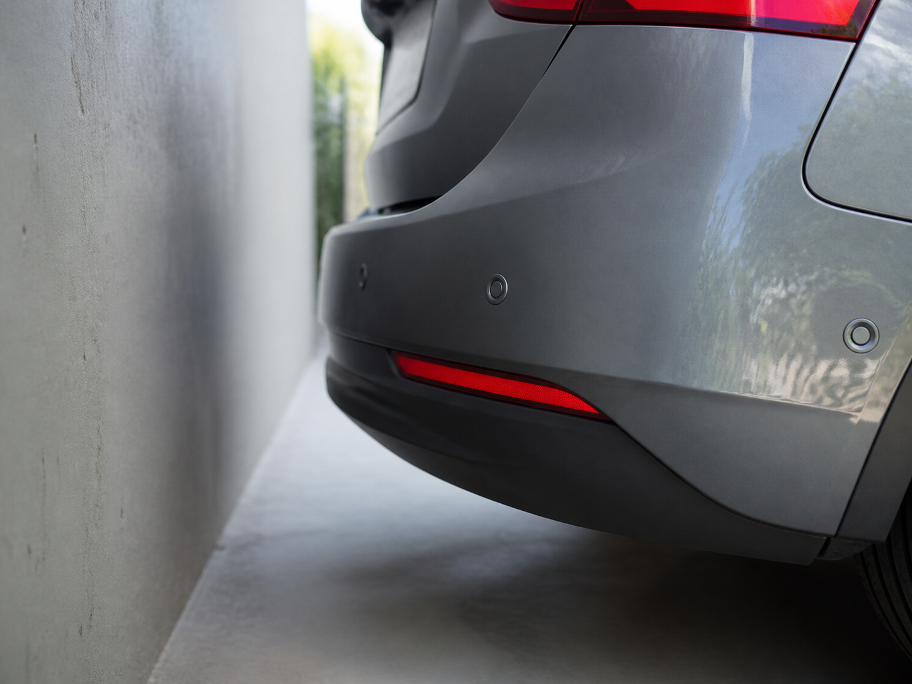
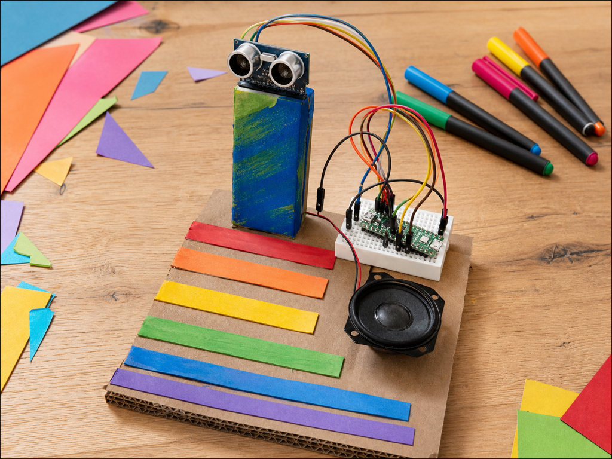
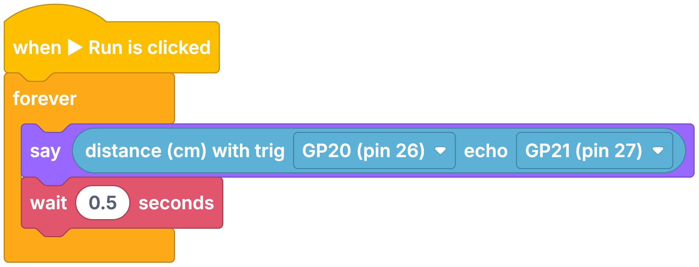

Parking sensor
DetectGap to the wall
DecideIs it closer than 30 cm?
DoBeep faster
An HC-SR04P distance sensor measures how far away something is without touching it.
It works like a bat. One side sends out a click too high for you to hear, the other side listens for the echo, and the time it takes gives the distance.
Your projects can use it to react as something comes closer, or to measure a gap that keeps changing.


